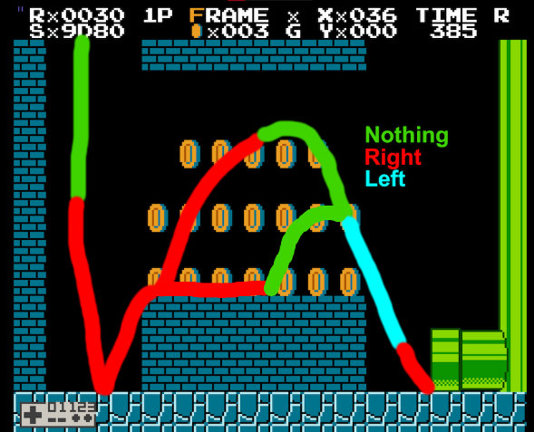
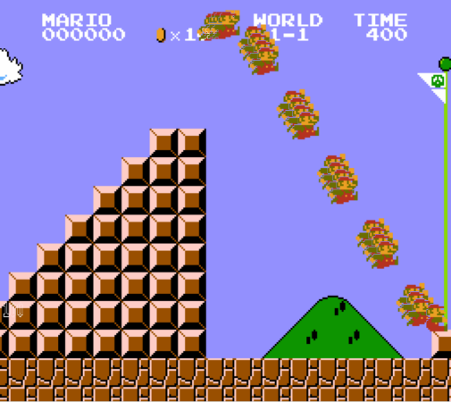

1-1
1-1 is the first level of SMB1. The route through the level involves entering the fourth pipe to go to a coin cache, doing a somewhat precise jump in the underground section, and then either grabbing the top of the flagpole or doing flagpole glitch.
Underground
The optimal IGT when leaving the underground section is 380. You can lose up to 7 frames from what is normally considered a perfect underground and still get 380. This means your movement has to be fairly clean, but there is still room for leniency.

Then, you can either do a high jump right after landing or a small jump from around the middle of the bricks.
Press left while in the air to avoid running into the side of the pipe. For optimal movement, it is very important to land on the ground before the pipe instead of hitting the side of it and losing all your speed.
If going for FPG, you need at least 1-D underground for the regular sockfolder setup.
Flagpole glitch
Main article: Flagpole glitch

Backup setups
If you get slower than 1-D underground, there are various alternative setups that save a few more frames.
averge1-1: D+R in the air then jump frame 177 and release after jumping, sets you up for D40 FPG.